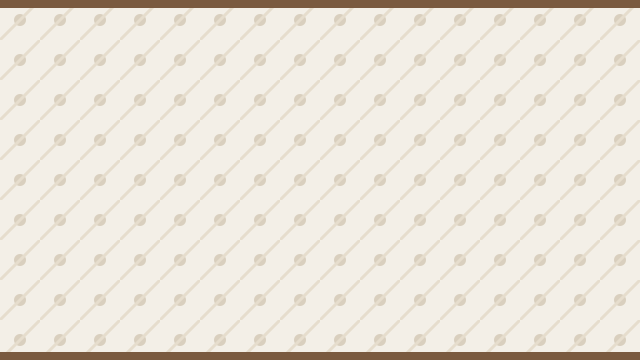

<!-- C02 Ex1 — ETTE ANTUD näidiskaart. Kopeeri ta oma nimekirja.
     Näitab ÜHT asja, mida esimene kaart ei näita: TÜHI alt="" kaunistava
     pildi jaoks. alt="" ja alt-i puudumine EI OLE sama asi. -->

        <li>
          <article>
            <h3><a href="/events/131">Arendajate hommik</a></h3>
            <!-- ★ TÜHI alt, sest pilt on puhtalt kaunistus: nimi ja aeg on
                 juba tekstis. `alt="pilt"` oleks halvem kui tühi alt. -->
            
            <p>Kolm ettekannet ja hommikukohv.</p>
            <p class="meta"><time datetime="2026-09-13T09:30">13. sept 9.30</time> · Delta</p>
          </article>
        </li>
